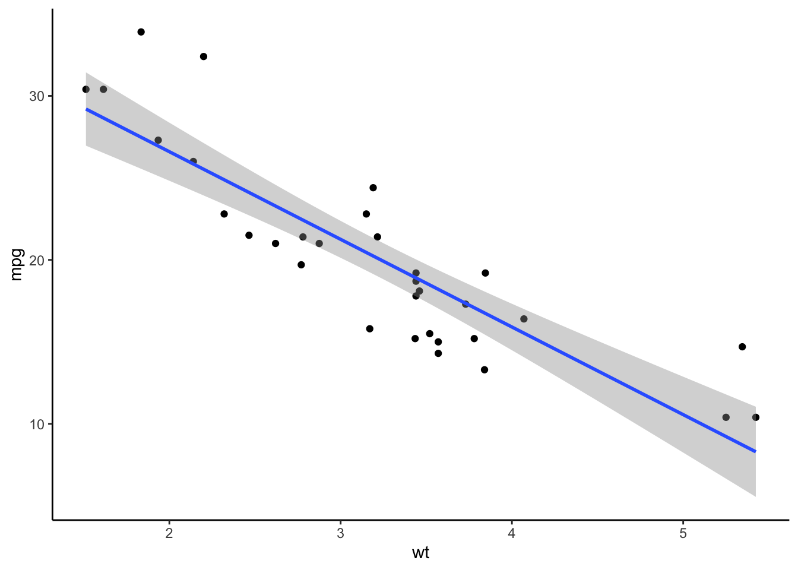

Lab 10: Simple Regression
Mar 28, 2022
# Load packages for this tutorial
library(gridExtra)
library(ggplot2)Model Fitting
การวิเคราะห์ข้อมูลทางสถิตินั้นอาจเรียกได้ว่าเป็นการนำแบบจำลองทางคณิตศาสตร์มาใช้อธิบายข้อมูลเชิงประจักษ์ ยกตัวอย่างเช่น เรามีสมมติฐานว่าบุคลิกภาพแบบ A จะสัมพันธ์ทางบวกกับความดันโลหิต หากเราเชื่อว่าอัตราการเปลี่ยนแปลงความดันโลหิตนั้นคงที่เมื่อบุคลิกภาพแบบ A สูงขึ้นหรือลดลง (เช่น ความดันจะเพิ่มขึ้น 5 มม.ปรอท เมื่อคะแนนบุคลิกภาพเพิ่มขึ้น 1 หน่วยเสมอ) เรากำลังจำลองว่าตัวแปรทั้งสองสัมพันธ์กันเชิงเส้นตรง สามารถเขียนเป็นสมการเส้นตรง \(y = mx + c\) โดยที่ y คือตัวแปรเกณฑ์ (ความดัน) m คือ ความชัน (ค่าที่บอกความสัมพันธ์ระหวางตัวแปร x และ y เช่น 5 มม.ปรอท ในตัวอย่างนี้) x คือตัวแปรทำนาย (ระดับบุคลิกภาพแบบ A) ส่วน c คือ จุดตัดแกน y ที่บอกว่าเส้นตรงนี้จะตัดแกน y (เมื่อ x = 0) ที่จุดไหน
การวิเคราะห์สถิติจำนวนมากที่นิยมใช้ล้วนตั้งอยู่บนพื้นฐานของสมการเส้นตรง (เช่น t test, correlation, anova, regression) และโปรแกรม R ก็ใช้แนวทางของการสร้างโมเดลเป็นพื้นฐานในการเขียนคำสั่งเช่นกัน
การเขียนโมเดลเส้นตรงให้ตัวแปร x ทำนายตัวแปร y จะอยู่ในรูปสมการ y ~ x โดยที่ y คือ ตัวแปรตาม/ตัวแปรเกณฑ์ ส่วน x คือตัวแปรอิสระ/ตัวแปรทำนาย
คำสั่งในการ fit โมเดลเส้นตรงเข้ากับข้อมูลคือ lm(formula = y ~ x, data) โดย y และ x คือชื่อตัวแปรที่อยู่ใน data คำสั่งนี้จะทำงานโดยการประมาณค่าพารามิเตอร์ (ค่าslope ค่า intercept) คำนวณความคลาดเคลื่อนในการทำนาย ผลการทำนาย ฯลฯ ออกมาเป็น output ที่เราจะเรียกว่า lm object
หลังจากที่เราได้ lm object แล้ว เราจึงค่อยนำมันไปใช้กับคำสั่งอื่นต่อไป เช่น summary() plot() confint() เป็นต้น
ดังนั้นสิ่งที่สำคัญในการวิเคราะห์ข้อมูล คือ การเลือกโมเดลให้เหมาะสมกับข้อมูลที่เราต้องการจะอธิบาย ยกตัวอย่างด้านล่าง เช่น น้ำหนักของรถยนต์ wt สัมพันธ์เชิงเส้นตรงในทางลบกับอัตราประหยัดน้ำมัน mpg (ยิ่งหนักยิ่งประหยัดน้อย) ในขณะที่ขนาดกระบอกสูบ disp นั้นสัมพันธ์ทางลบแต่เป็นเส้นตรงโค้ง (curvilinear) กับอัตราประหยัดน้ำมั้น mpg

Simple Regression
สำหรับการวิเคราะห์ถดถอยอย่างง่าย (simple regression analysis) เราจะทดสอบความสัมพันธ์เชิงเส้นตรงระหว่างตัวแปรทำนาย (X) และตัวแปรเกณฑ์ (Y)
การ fit โมเดลเส้นตรง ทำโดยใช้คำสั่ง lm(formula, data) โดย formula เป็นโมเดลทางสถิติที่บอกว่าตัวแปรใดเป็นตัวแปรทำนายตัวแปรใดเป็นตัวแปรเกณฑ์ ส่วน data คือ data frame
ในตัวอย่างนี้เราจะใช้ชุดข้อมูล mtcars ซึ่งเป็นข้อมูลเกี่ยวกับรถยนต์รุ่นต่าง ๆ โดยเราต้องการทำนายอัตราการประหยัดน้ำมัน mpg ด้วยตัวแปรน้ำหนักของรถยนต์ wt
data(mtcars)
head(mtcars)## mpg cyl disp hp drat wt qsec vs am gear carb
## Mazda RX4 21.0 6 160 110 3.90 2.620 16.46 0 1 4 4
## Mazda RX4 Wag 21.0 6 160 110 3.90 2.875 17.02 0 1 4 4
## Datsun 710 22.8 4 108 93 3.85 2.320 18.61 1 1 4 1
## Hornet 4 Drive 21.4 6 258 110 3.08 3.215 19.44 1 0 3 1
## Hornet Sportabout 18.7 8 360 175 3.15 3.440 17.02 0 0 3 2
## Valiant 18.1 6 225 105 2.76 3.460 20.22 1 0 3 1ในโปรแกรม R สมการจะเขียนอยู่ในรูปแบบ y ~ x ดังนั้นสมการ (formula) ของตัวอย่างนี้คือ mpg ~ wt (ใช้นำ้หนักทำนายอัตราประหยัดน้ำมัน)
เมื่อเรา fit โมเดลนี้ด้วยคำสั่ง lm() เราจะบันทึกผลเป็น object ที่ชื่อว่า reg.lm ใน object นี้จะมีข้อมูลที่สำคัญเกี่ยวกับการวิเคราะห์ regression
ในเบื้องต้นเราจะใช้คำสั่ง summary() เพื่อดู output ของการวิเคราะห์ถดถอย และใช้คำสั่ง confint() เพื่อดู 95% CI ของค่าประมาณการพารามิเตอร์ในโมเดล (เช่น ค่า intercept และ slope)
reg.lm <- lm(mpg ~ wt, mtcars)
summary(reg.lm)##
## Call:
## lm(formula = mpg ~ wt, data = mtcars)
##
## Residuals:
## Min 1Q Median 3Q Max
## -4.5432 -2.3647 -0.1252 1.4096 6.8727
##
## Coefficients:
## Estimate Std. Error t value Pr(>|t|)
## (Intercept) 37.2851 1.8776 19.858 < 2e-16 ***
## wt -5.3445 0.5591 -9.559 1.29e-10 ***
## ---
## Signif. codes: 0 '***' 0.001 '**' 0.01 '*' 0.05 '.' 0.1 ' ' 1
##
## Residual standard error: 3.046 on 30 degrees of freedom
## Multiple R-squared: 0.7528, Adjusted R-squared: 0.7446
## F-statistic: 91.38 on 1 and 30 DF, p-value: 1.294e-10confint(reg.lm)## 2.5 % 97.5 %
## (Intercept) 33.450500 41.119753
## wt -6.486308 -4.202635ส่วน Call: แสดงสูตรโมเดลที่เรากำลังวิเคราะห์
ส่วน Residuals: แสดงความคลาดเคลื่อนในการทำนาย, \(Y-\hat{Y}\).
ส่วน Coefficients: แสดงค่าสัมประสิทธิ์ในสมการเส้นตรง ได้แก่ ค่าจุดตัดแกน Y (intercept) และความชัน (slope) ของตัวแปรทำนาย รวมไปถึงการทดสอบนัยสำคัญทางสถิติของค่าแต่ละตัว
เครื่องหมายดอกจัน (asterisks [*]) เป็นตัวบอกระดับนัยสำคัญทางสถิติที่ระดับ \(\alpha\) ต่าง ๆ กัน
ส่วนต่อไปแบ่งได้เป็นดังนี้
Residual standard errorคือ ค่าส่วนเบี่ยงเบนมาตรฐานของความคลาดเคลื่อน (standard deviation of residuals) (errors),- degrees of freedom คือ df ของ residual มีค่าเท่ากับ = \(N-k-1\) (k = number of parameters
- Multiple R-squared (\(R^2\)) คือค่าที่บอกว่าความแปรวนในตัวแปรตาม Y สามารถอธิบายได้ด้วยชุดของตัวแปร X มากน้อยเท่าไหร่
- Adjusted \(R^2\) คือค่า \(R^2\) ที่ปรับแก้จำนวนตัวแปรทำนายแล้วเพื่อให้แม่นยำมากขึ้น (สำหรับ simple regression ที่มีตัวแปรทำนายเพียงตัวเดียว ค่านี้มักใกล้เคียงกับ \(R^2\) หรือ un-adjusted \(R^2\) )
- ค่า F เป็นการทดสอบโมเดลในภาพรวม ใน simple regression ผลการทดสอบค่า F นี้จะสอดคล้องกับการทดสอบค่า slope
- df เป็นของ regression model (\(k\) คือจำนวน) และ df ของ residuals (\(N-k-1\))
- p-value ของสถิติ F
Coefficients
ในการวิเคราะห์นี้ เราสามารถนำค่าสัมประสิทธิ์มาเขียนเป็นสมการทำนายได้เป็น \(\hat{Y}_{mpg} = 37.285 - 5.344X_{wt}\) โดยค่า intercept และ slope มาจาก output ของ summary()
จุดตัดแกน Y (intercept, \(b_0\)) เป็นค่าทำนายตัวแปร Y เมื่อ X = 0 ในตัวอย่างนี้คือ อัตราประหยัดน้ำมันของรถที่มีนำ้หนัก 0 ตัน คือ 37.29 ไมล์ต่อแกลลอน ในกรณี เราสังเกตได้ว่าค่าจุด intercept นั้นไม่ได้ความหมายโดยตัวมันเองเท่าใดนัก เพราะเราไม่ได้ต้องการรู้ว่ารถน้ำหนัก 0 ตันจะมีอัตราประหยัดน้ำมันเท่าใด
ค่าที่เราสนใจคือ สัมประสิทธิ์ที่แสดงถึงความสัมพันธ์ระหว่าง
wtและmpgนั่นก็คือ ค่าความชันของตัวแปรwt, b = -5.34 ค่าทางลบแสดงว่าเมื่อน้ำหนักรถเปลี่ยนแปลงไปหนึ่งตัน อัตราประหยัดน้ำมันจะเปลี่ยนไปในทิศทางตรงกันข้าม 5.34 ไมล์ต่อแกลลอน
reg.lm$coefficients## (Intercept) wt
## 37.285126 -5.344472Prediction
เราสามารถใช้สมการนี้ทำนายค่า mpg สำหรับค่า wt ที่เราต้องการได้ เช่น หากมีรถที่หนัก 1.5 ตัน เราจะทำนายว่ารถคันนี้มีอัตราประหยัดน้ำมัน \[ \begin{aligned}
\hat{Y}_{mpg} &= 37.285 - 5.344(1.5) \\
&= 37.285 - 8.016 \\
&= 29.269
\end{aligned} \]
เราสามารถใช้คำสั่ง predict(object, newdata) ได้
predict(reg.lm, data.frame(wt = 1.5)) # newdata is a data frame with same variable name. ## 1
## 29.26842predict(reg.lm, data.frame(wt = c(1.0, 1.2, 1.4, 1.6))) # predict multiple new values## 1 2 3 4
## 31.94065 30.87176 29.80287 28.73397predict(reg.lm) # show predicted value for current dataset## Mazda RX4 Mazda RX4 Wag Datsun 710 Hornet 4 Drive Hornet Sportabout Valiant
## 23.282611 21.919770 24.885952 20.102650 18.900144 18.793255
## Duster 360 Merc 240D Merc 230 Merc 280 Merc 280C Merc 450SE
## 18.205363 20.236262 20.450041 18.900144 18.900144 15.533127
## Merc 450SL Merc 450SLC Cadillac Fleetwood Lincoln Continental Chrysler Imperial Fiat 128
## 17.350247 17.083024 9.226650 8.296712 8.718926 25.527289
## Honda Civic Toyota Corolla Toyota Corona Dodge Challenger AMC Javelin Camaro Z28
## 28.653805 27.478021 24.111004 18.472586 18.926866 16.762355
## Pontiac Firebird Fiat X1-9 Porsche 914-2 Lotus Europa Ford Pantera L Ferrari Dino
## 16.735633 26.943574 25.847957 29.198941 20.343151 22.480940
## Maserati Bora Volvo 142E
## 18.205363 22.427495Hypothesis testing
If we takes an Estimate (intercept or slope) and divide by its Std. Error(SE), you will get a t-value. We can then use a t-distribution to calculate a p-value to determine statistical significance. The p-value was a probability of obtaining that t value or more extreme given that a null hypothesis is true. The null hypothesis being tested here was \(H_0 : b = 0\).
A significant test of coefficient (i.e., p < .05) suggests that, if the relationship does not exist, it is very unlikely to obtain this magnitude of slope. Thus, we infer that the relationship may exist (accepting \(H_a\)). In other words, the coefficient may not be zero.
Confidence interval of coefficients
We can calculate a 95% CI for each coefficient.
confint(reg.lm) #default setting is 95% CI## 2.5 % 97.5 %
## (Intercept) 33.450500 41.119753
## wt -6.486308 -4.202635confint(reg.lm, level = .99) # set to 99% CI## 0.5 % 99.5 %
## (Intercept) 32.121659 42.448593
## wt -6.881997 -3.806946The 99% CI is wider than the 95% CI because the 99% CI represents a higher chance of being correct about the population value. Thus, it includes a larger margin of error.
Even with the 99% confidence level, the CI of wt slope does not contain zero. This gives us confidence that the negative relationship between wt and mpg may really exists.
Standardized coefficients or betas
Raw coefficients are in a unit of variable Y, which make it hard to judge the strengh of relationship. To solve this problem, we could standardize the coefficient to make it easier to interpret. This standardized regression coefficients are also called beta (\(\beta\)) by some statistical programs.
# install.packages("QuantPsyc")
library(QuantPsyc)
lm.beta(reg.lm)## wt
## -0.8676594The standardized coeff. of -.87 was quite a strong negative relationship.
Scatter Plot
To create a scatter plot with a fit line.
- Use
ggplot(data, aes(x, y))to specify the data and aesthetic mapping, - Use
geom_point()to make a scatter plot, - Use
geom_smooth(method = , se = )to add the best fit line. Themethodoption refers to a method to create a smooth line, which would belmfor a linear model. The optionseis for confidence interval around the predicted line, which isTRUEby default.
ggplot(mtcars, aes(x = wt, y = mpg)) +
geom_point() + # scatter dots
geom_smooth(method = lm, se = TRUE) + #add a linear fit line to the previous plot
theme_classic()